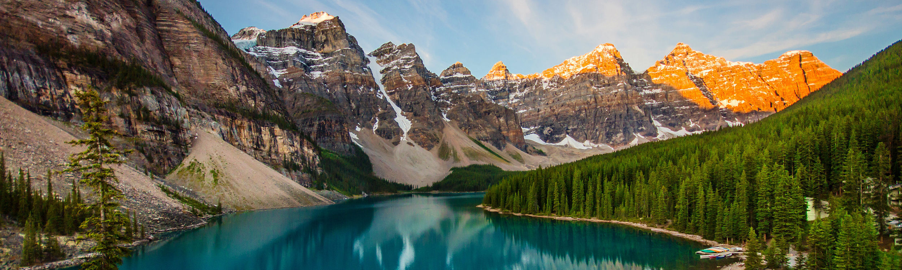
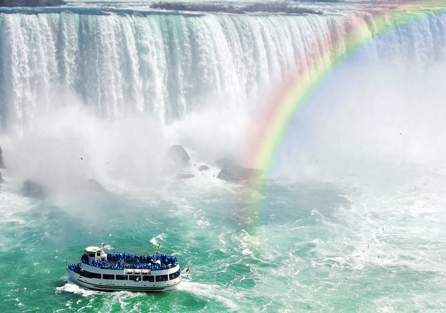
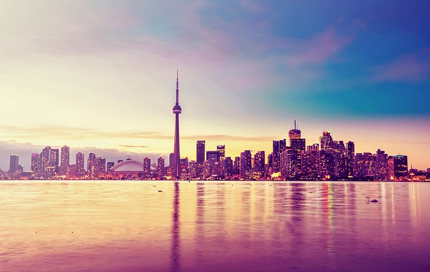

Lieux à visiter

- Lac Morraine -
Le lac Moraine est nommé d'après les moraines déposées par le glacier Wenkchemna. Les moraines sont des débris (roches, cailloux, galets, sable) déposés au cours de la fonte des glaciers.
Le lac a une surface de 0,5 km.
Le lac, rempli par la glace, n'atteint son niveau maximal que dans la seconde quinzaine de juin. Quand il est plein, il reflète une teinte distincte de bleu. Cette couleur vient de la réfraction de la lumière sur la poussière de roche en suspension dans l'eau.
Une représentation du lac Moraine figurait au dos des billets de vingt dollars canadiens de 1969 et 1979.

- Les Chutes de Gaara -
Les chutes du Niagara, ainsi que la rivière Niagara et les Grands Lacs nord-américains, sont apparues lors de la déglaciation qui a suivi la période glaciaire du Wisconsin, il y a environ 30 000 à 50 000 ans. Durant cette période, cette région était couverte par un énorme glacier continental (inlandsis laurentidien) qui en fluant vers le sud depuis le territoire canadien oriental a broyé et transporté roches et sols sur son parcours. Il a surcreusé des vallées, emplacements des futurs lacs, et en a barré d’autres par des moraines.

- Toronto -
La population particulièrement cosmopolite de Toronto reflète son rôle historique de destination des immigrants au Canada. Plus de 50 % des résidents appartiennent à un groupe de minorités visibles et plus de 200 origines ethniques distinctes sont représentées parmi ses habitants. Bien que la majorité des Torontois parlent l'anglais principalement, plus de 160 langues sont parlées dans la ville.
Toronto est devenu un important centre de musique, théâtre, de production cinématographique et télévisuelle. Elle abrite le siège des principaux réseaux de diffusion et des médias nationaux du Canada. Ses institutions culturelles variées, qui comprennent de nombreux musées et galeries d'art, des festivals et événements publics, des quartiers de divertissement, des lieux historiques nationaux et des activités sportives, attirent plus de 25 millions de touristes chaque année. Toronto est connue pour ses nombreux gratte-ciel, en particulier la plus haute structure autoportante de l' hémisphère occidental, la tour CN.